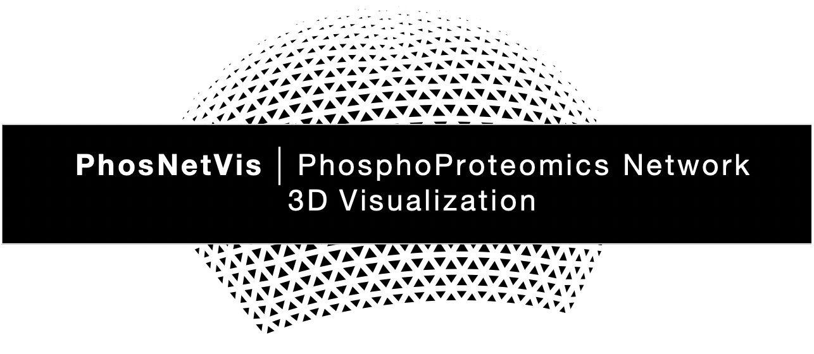
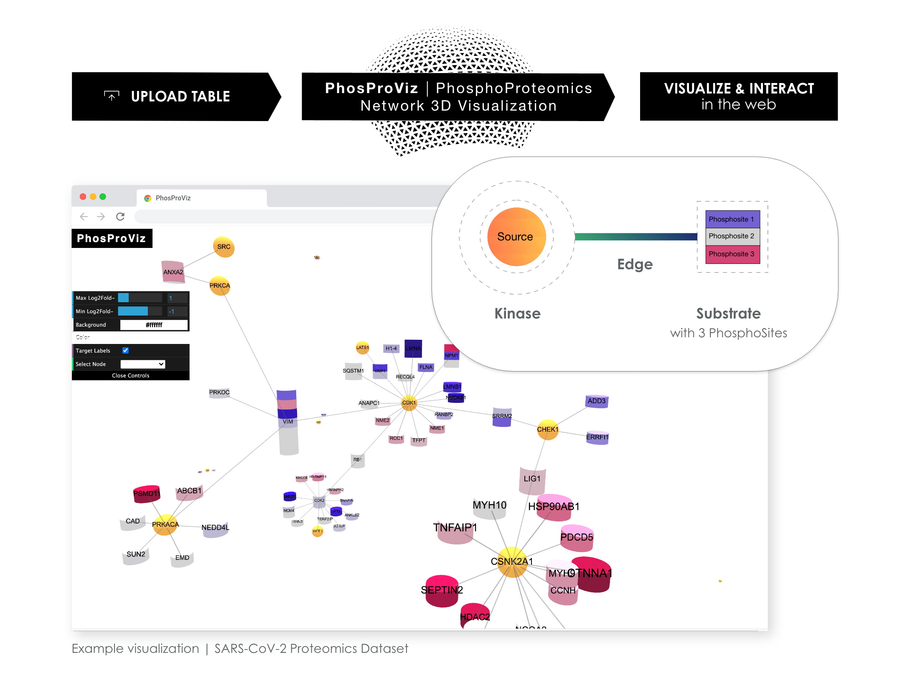
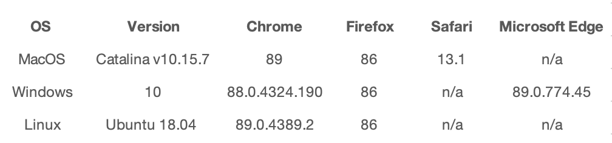

Meet PhosNetVis.
👋
PhosNetVis is a tool that enables users to easily generate shareable interactive 3D phosphoproteomics network visualizations with
phosphorylation sites and states, by simply uploading their data as a comma-separated file. Users can further explore and query these
visualizations based on their protein, phosphorylation site, or state of interest, as well as associated user-defined variables (such as clinical data
or protein abundance information). PhosNetVis is based in JavaScript (Three.js, 3d-force-graph), and is open-source (on GitHub). PhosNetVis
significantly lowers the barriers for proteomics researchers in rapidly generating intuitive and high-quality visualizations, empowering
investigators to translate rich data into biological insights.
What are we visualizing?
Protein phosphorylation is a reversible post-translational modification that involves the phosphorylation of a substrate protein residue by a
kinase. This modification is vital for cellular processes and signaling networks. Recent advances in mass spectrometry-based quantitative
proteomics allow the rapid generation of protein phosphorylation datasets at multiple states. These datasets are typically visualized as networks,
with kinases and substrates represented as nodes, and the interactions between them as edges. It is also important to visualize the states of all
phosphorylation sites altered within each substrate.
Why is our approach unique?
Currently available visualization tools are not optimized for large and complex phosphoproteomics networks with their associated
phosphorylation data. Current workflows involve manually adjusting parameters and thresholds to maximize usefulness, minimize clutter, and
improve the visualization design. This process can be improved with scripting languages, however, proteomics researchers should not need to
learn these programming skills to create visualizations. Thus, there is a need for a tool that facilitates the user-intuitive and interactive
exploration, visualization and communication of phosphoproteomics datasets.

Our tool has been tested on the following browsers and operating systems:

This website is free and open to all users and there is no login requirement.
Meet the creators:
Shreya Chandrasekar, Irene Font Peradejordi (Cornell Tech), Berk Turhan (Sabanci University)
Dr. Jeffrey Johnson, Dr. Selim Kalayci, Dr. Zeynep Gumus (Icahn School of Medicine at Mount Sinai)